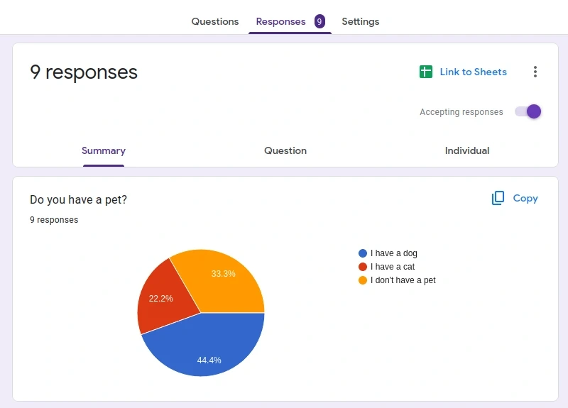
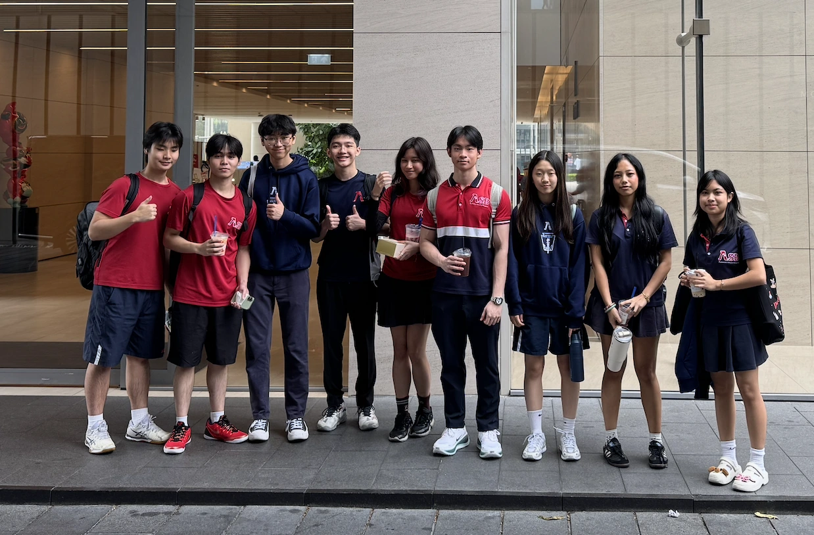
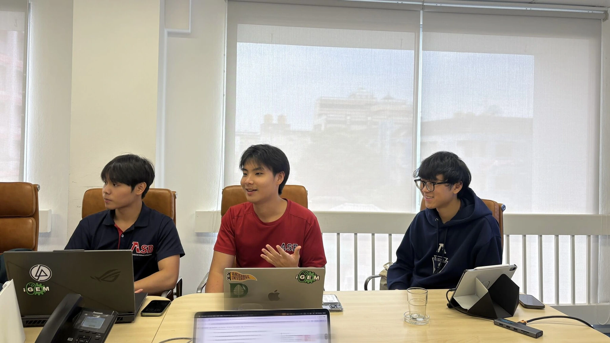

Cycle 1
Consolidating project with expert opinion
Our IHP journey began with feedback from professors in synthetic biology, including Professor Julius Fredens from NUS and Professor Chanati from Mahidol University.
Professor Julius Fredens reviewed our HotPETase glycosylation framework and found it interesting that we were leveraging post-translational modification to improve the thermostability of an already thermostable enzyme. His feedback encouraged us to further investigate how glycosylation could affect HotPETase under high-temperature conditions.
Professor Chanati fundamentally changed the direction of our project. Our initial idea focused on improving HotPETase thermostability and making the PET-to-TPA pathway as efficient as possible. He introduced us to the broader potential of converting PET into different high-value compounds. This led us to explore plastic upcycling rather than simply improving plastic degradation. We began asking how a PET-derived compound could address a local need, eventually leading us to melanin as a UV-shielding pigment. We incorporated his suggestion by developing MELANIFY around converting PET waste into melanin to address Thailand’s intense UV exposure.
Consolidating project with public opinion

View full sizeAfter hearing Professor Chanati’s feedback, we asked our local community what they saw as pressing problems in Thailand. Among the issues we identified was Thailand’s intense UV exposure. Our survey of the XCL American School of Bangkok community showed that UV exposure was particularly relevant to our students, who spend much of their time outdoors due to limited indoor sporting facilities. This prompted us to investigate the issue beyond our school community, where we found that high UV exposure is a broader concern across Thailand. We then asked: could we turn a waste problem into a solution for a local problem? This became the basis for MELANIFY.
Cycle 2
Real World Application
After incorporating this feedback, we spent three months in the wet lab developing and testing our system. With our preliminary data, we presented our
technology to Propella Ventures, alongside CEO Thitiphat Thaveesin and representatives from three major recycling companies in Thailand. We presented our PET degradation framework and explained how its thermal stability could potentially be adapted for future biodegradation technologies.
One of the participating biodegradation companies, based in Pathum Thani, shared how their current processes operate and challenged us to think beyond whether our system worked: could it be economically viable? Their feedback pushed us to investigate the efficiency and economics of PET upcycling and consider how we could reduce the costs associated with converting PET into higher-value compounds.
This shifted our perspective from simply demonstrating PET degradation to asking how biological systems could make PET upcycling economically meaningful at scale. It also established connections with industry partners that could help us explore future applications of our technology.
 View full size
View full size

View full sizeStage 3 Expanding Impact
Finally, we brought MELANIFY to the United Nations Industrial Development Organization (UNIDO), presenting our project to Fukuya IINO (Ph.D., MBA), Representative of UNIDO’s Sub-Regional Office for Thailand, Malaysia, Myanmar, Cambodia, Lao PDR, and Viet Nam. This gave us the opportunity to discuss our technology with an organization working across the region on industrial development and sustainable technologies.
UNIDO was particularly interested in our ability to convert PET into TPA and ultimately into melanin, especially because their work overlapped with efforts to develop alternative plastic materials. They encouraged us to consider potential collaborations and applications beyond our original scope.
Their most important question was: what happens if we take MELANIFY outside Thailand? Our original application was closely tied to Thailand’s intense UV exposure, but that constraint would not apply everywhere. This pushed us to
consider stopping the pathway at TPA or exploring other PET-derived intermediates and products better suited to different regions, including compounds such as gallic acid with potential biomedical applications.
Rather than designing MELANIFY around a single product or country, we began viewing the PET pathway as a platform for producing different high-value compounds according to local needs. UNIDO helped us take a project designed for a Thai problem and consider how the same biological infrastructure could be adapted across borders.
In the end, our project was recognized by the United Nations, giving us the opportunity to bring MELANIFY beyond our school and into conversations about how biotechnology can address global challenges.

View full size